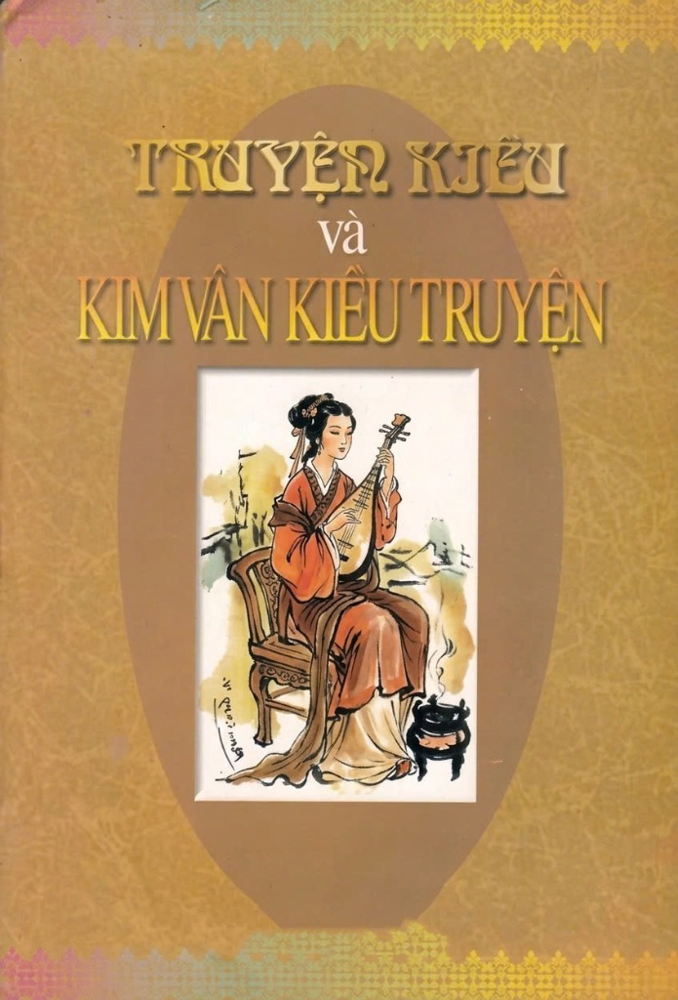
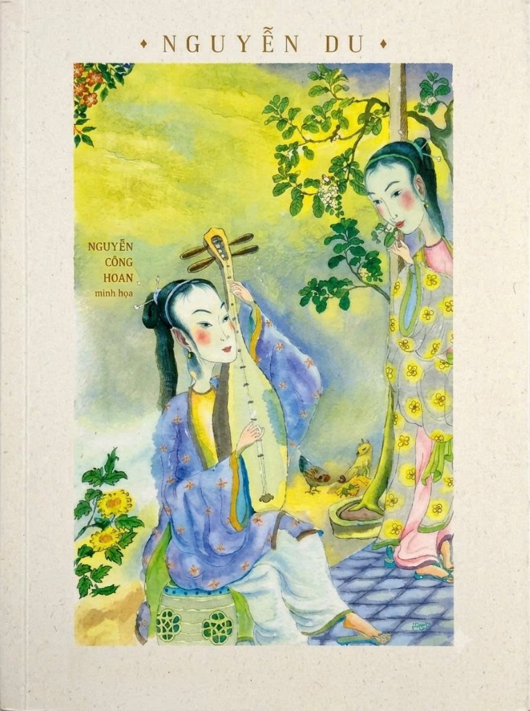

ĐẾN TRUYỆN KIỀU
Hành trình tiếp nhận, cải biến và sáng tạo trong văn học trung đại Việt Nam

Truyện Kiều, tên gọi quen thuộc của Đoạn trường tân thanh, là kiệt tác bất hủ của đại thi hào Nguyễn Du (1765–1820). Tác phẩm được viết bằng chữ Nôm theo thể lục bát truyền thống gồm 3.254 câu thơ. Qua cuộc đời mười lăm năm chìm nổi của Thúy Kiều, tác giả cất lên tiếng khóc thương cảm sâu sắc đối với số phận con người, đặc biệt là người phụ nữ tài hoa nhưng bạc mệnh dưới chế độ phong kiến.

Sinh ra trong gia đình trung lưu gia giáo, Thúy Kiều gặp gỡ và đính ước cùng Kim Trọng. Khi gia đình mắc oan khiên, nàng quyết định bán mình chuộc cha và em, bắt đầu 15 năm lưu lạc bị đồng tiền, quyền lực chà đạp. Cuối cùng, Kiều đoàn tụ với gia đình và Kim Trọng, nhưng kết thúc ấy gợi suy ngẫm khôn nguôi về những tổn thương nhân phẩm không thể vẹn nguyên.
“Lời văn tả ra hình như có máu chảy ở đầu ngọn bút, nước mắt thấm ở trên tờ giấy, khiến ai đọc đến cũng phải thấm thía ngậm ngùi…” — Mộng Liên Đường chủ nhân (1820)
Tiếp nhận cốt truyện từ tiểu thuyết chương hồi Kim Vân Kiều truyện của Thanh Tâm Tài Nhân, Nguyễn Du tuyệt đối không sao chép hay phiên dịch cơ học. Ông tái sinh chất liệu tự sự ấy bằng một cảm quan nghệ thuật thuần Việt, tạo nên một kiệt tác có giá trị tư tưởng và thẩm mỹ độc lập hoàn toàn.

Chuyển thể từ văn xuôi chương hồi Hán văn sang truyện thơ Nôm lục bát giàu nhạc tính và sức nén cảm xúc biểu cảm phi thường.
Biến các biến cố bên ngoài thành chiều sâu tâm lý giằng xé; vận dụng bút pháp tả cảnh ngụ tình đạt đến độ điêu luyện bậc thầy.
Lược bỏ tính đạo lý răn dạy và sự báo thù tàn nhẫn, nâng tầm tiếng nói xót thương, bênh vực quyền sống và phẩm giá của con người.
Vận dụng thành ngữ, tục ngữ, ca dao vào thể thơ lục bát, đưa tiếng Việt đạt đỉnh cao rực rỡ của ngôn ngữ văn học bác học.
Dầu dầu ngọn cỏ nửa vàng nửa xanh…
Đau đớn thay phận đàn bà,
Lời rằng bạc mệnh cũng là lời chung.”
“Nguyễn Du viết Kiều, đất nước hóa thành văn.” Giá trị tiếp nhận nằm ở năng lực biến đổi chất liệu cũ, tạo nên cách thể hiện và ý nghĩa nhân sinh mới. — Chế Lan Viên & Đúc kết lý luận Ngữ văn 12
Kim Vân Kiều truyện (金雲翹傳) của Thanh Tâm Tài Nhân là bộ tiểu thuyết chương hồi bằng văn xuôi chữ Hán gồm 20 hồi, ra đời vào thời Minh – Thanh ở Trung Quốc. Tác phẩm kể câu chuyện về Vương Thúy Kiều cùng những biến cố về tình yêu, gia đình, chữ hiếu và chuỗi ngày lưu lạc.

- Kết cấu tự sự tuyến tính 20 hồi: Diễn biến câu chuyện triển khai theo trình tự thời gian với chuỗi biến cố, sự kiện nối tiếp kịch tính.
- Thiên về hành động và đối thoại: Nhân vật bộc lộ qua lời nói giải thích lý lẽ cặn kẽ và hành động ứng phó thực tế trước nghịch cảnh.
- Phản ánh quy ước xã hội thời đại: Khắc họa trật tự Nho gia, luật nhân quả và quan niệm về người tài tử giai nhân thời phong kiến Trung Hoa.
Lưu ý học thuật: Niên đại chính xác và lai lịch Thanh Tâm Tài Nhân vẫn còn những quan điểm thảo luận trong giới nghiên cứu văn học sử.
Đặt hai tác phẩm cạnh nhau giúp người đọc nhận diện rõ ranh giới giữa kế thừa chất liệu và sáng tạo nghệ thuật độc lập.
| Phương diện | Kim Vân Kiều truyện | Truyện Kiều (Nguyễn Du) |
|---|---|---|
| 1. Thể loại | Tiểu thuyết chương hồi văn xuôi Hán văn (20 hồi). | Truyện thơ Nôm viết bằng thể lục bát (3.254 câu). |
| 2. Cốt truyện | Cốt truyện tự sự nguồn, nhiều tình tiết rườm rà. | Tiếp nhận khung truyện, tinh lọc và tổ chức lại giàu nhịp điệu. |
| 3. Cách thể hiện | Kể chuyện qua biến cố, sự kiện và đối thoại giải thích. | Cô đọng bằng ngôn ngữ thơ, ẩn dụ và tả cảnh ngụ tình. |
| 4. Trọng tâm | Xung đột tình – tiền – quyền và đạo lý quả báo. | Giảm tính báo thù; nâng cao tiếng khóc nhân đạo thương người. |
| 5. Dấu ấn văn hóa | Gắn liền với xã hội tài tử giai nhân Trung Hoa. | Kết tinh tâm hồn, tiếng nói và bản sắc văn hóa Việt Nam. |
Với học sinh lớp 12 hôm nay — giữa dòng chảy văn hóa đa phương tiện, chuyển thể điện ảnh và sáng tạo số — bài học từ Nguyễn Du nhắc nhở: Kế thừa tinh hoa không phải là sao chép vô hồn. Người sáng tạo trẻ chỉ làm nên tác phẩm đích thực khi có góc nhìn độc lập, rung cảm chân thành và bản sắc văn hóa của chính dân tộc mình.
- Nguyễn Du, Truyện Kiều (Đoạn trường tân thanh), bản chú giải GS. Nguyễn Thạch Giang.
- Thanh Tâm Tài Nhân, Kim Vân Kiều truyện, bản dịch NXB Văn học.
- SGK Ngữ văn 12 (Tập 1), Bộ Giáo dục và Đào tạo.
“Tiếng thơ ai động đất trời,— Tố Hữu (Kính gửi cụ Nguyễn Du)
Nghe như non nước vọng lời ngàn thu.
Nghìn năm sau nhớ Nguyễn Du,
Tiếng thương như tiếng mẹ ru những ngày…”
Tiếp nhận tinh hoa của nhân loại — Bồi đắp và tỏa sáng bản sắc văn hóa Việt Nam.